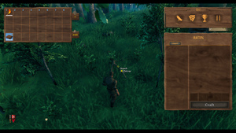
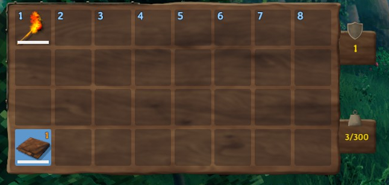
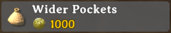
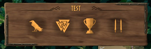
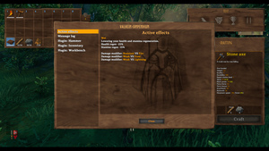
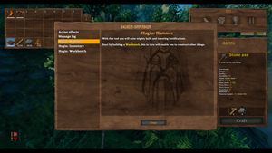
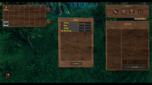
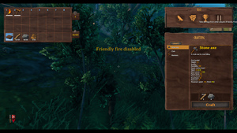
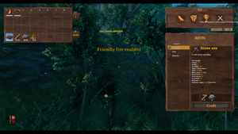

物品栏
本地离线版支持中英文站内搜索。带 ↗ 的链接需联网；中文采用用户词表，各页来源版本见页脚。


物品栏用于携带装备和物品。
物品栏界面


初始背包为8x4网格，共32格，其中8格组成快捷栏，没有专用穿戴格。之后可从霍尔德购买两种物品栏扩展，每种增加一行8格，总容量48格。
右上盾图标显示总护甲，右下重量显示当前负重及上限。
从地面拾取或Ctrl+左键转入的物品，从左下向右排列，再逐行至右上。工具和武器例外，制作时，或此前已制作后丢地、放箱的，会从左上至右下加入。
上图是玩家初到英灵神殿时的背包，仅带火把和碎布上衣。火把是武器或工具，因此位于左上；破布上衣两者都不是，因此位于左下。
装备
以下每个装备位置都可装备一件物品：
蓝底表示已装备。可明确选择优先使用的一堆箭和弩箭；未选或耗尽时，采用背包第一堆。升级当前穿戴装备会将其卸下。
控制
- 左键点击拿起物品，再点击栏位将其移入。
- 点击网格外会丢弃物品。
- 右键点击以装备或使用物品。
- Ctrl+左键可将单件或整堆物品移至已打开宝箱、移回背包，或丢到地上。
- 按住Shift并左键点击物品堆叠以拆分。
- 除滑块外，也可用键盘输入拆分数量。没有直接数字反馈，但滑块会随输入更新。
- 按1-8装备或使用快捷栏中的物品。
- 按R收起当前装备。
快捷栏
物品放入快捷栏后选择，效果等同背包右键使用。无需打开背包，因此主要用于切换武器、工具或饮用蜜酒。
负重
每件携带物品都有重量。超过负重上限会获得超重，限制步行距离、减速并阻止攻击或格挡。
因此，可达到的负重上限为1150.0。
扩大
有两种永久背包扩容，分别在击败特定首领后由霍尔德出售：
| 图标 | 名称 | 费用 | 获取方式 | 说明 |
|---|---|---|---|---|
 |
加宽口袋 | 击败后 冰霜龙母 | 永久增加一行物品栏（+8个栏位）。 （每名玩家只能购买一次） | |
| File:Deeper Pockets.png | 加深口袋 | 击败后 蛊虫之后 | 永久再增加一行物品栏（+8个栏位）。 （每名玩家只能购买一次） |


基础32格，完成两种扩容后48格。扩容均不提高负重上限。
制作界面
背包制作菜单允许制作以下四种物品：
无法在物品栏的制作菜单中修理物品。
额外选项


显示背包附加选项，顶部文字是玩家名，此例为TEST。
渡鸦菜单




显示英灵神殿资料集，可重读福金消息，以及阅读符文石解锁的背景条目。另有当前效果，显示地图左侧可见的状态，以及消息记录，用于查看近期屏幕消息。
显示教程信件 。
技能菜单


以瓦尔克努特三角结图标表示，显示玩家使用过的技能及等级。红线为下一级进度，黄线为当前等级。
技能受到加成时，显示额外蓝色数字及条上的蓝色部分。
战利品收藏
显示玩家拾取过的全部战利品及描述。
PVP




开启或关闭玩家对战。开启后，也可用屠夫刀之外的武器伤害驯服生物。
| 攻略 | |
|---|---|
| 玩家 | |
| 战斗 | |
| 生成 | |
| 建材 | |
| 界面 | |
| 世界 | |
| 杂项 | |
| 开发 | |
The inventory is what the player uses to carry equipment and gear.
Inventory screen
Initially, the inventory is presented as a 8x4 grid with a total capacity of 32 slots, 8 of which make the hotbar. There are no dedicated slots for wearing armor or equipment. Later, two inventory expansions can be purchased from Haldor, each adding another row of 8 slots, for a total capacity of 48 slots.
The shield icon in the top right shows the total armor. The weight in the bottom right shows how much the player is carrying out of their max weight limit.
Picked up items (either from the ground or Ctrl+LeftClick'ed) are added from the lower left rightwards to the upper right. Exceptions are tools and weapons. These, at the time of crafting or if previously crafted and dropped on the ground or placed in a chest, are added from the upper left to the lower right.
The image above shows a player's inventory screen upon arrival in Valheim. The player starts the game with only a Torch and a Rag Tunic. The Torch occupies in the upper left square of the grid because it is a weapon or tool. The Rag Tunic occupies the lower left square of the grid because it is neither.
Equipping
It is possible to equip an item in each of the following slots:
- right hand (weapons and tools)
- left hand (shields)
- some equipment is two-handed and occupies both hand slots
- head (hats and helmets)
- chest (tunics and chestplates)
- legs (pants and greaves)
- accessory
- trinket
A blue background indicates the equipment is equipped. Additionally, it is possible to explicitly select a preffered stack of arrows and bolts; if none are selected or the stack is depleted, the first stack in the inventory will be used. Upgrading any currently worn equipment will unequip it.
Controls
- Left-Click to pick up any item and click again on a slot to move it.
- Clicking outside the grid will throw the item.
- Right-Click to equip equipment or use the item.
- Use Ctrl+LeftClick to move an item or full stack to an open chest and back, or to throw it to the ground.
- Shift+LeftClick on a stack to split it.
- Besides the slider, it is possible to type the amount to split using the keyboard. There is no direct visual feedback, but the slider will update accordingly as the number is being entered.
- 1-8 to equip or use items in the hotbar.
- R to holster current equipment.
Hotbar
Placing an item into the hotbar and selecting it has the same effect as Right-Clicking it in the inventory. The hotbar can be used without having to open the inventory, thus, it is primarily used to switch between weapons or tools, or to drink mead.
Forsaken Altars, Item Stands and Armor Stands require items to be placed on them from the hotbar.
Carry weight
Every carried item has weight. Carrying items over the maximum carry weight results in the Encumbered effect, which limits how far the player can walk, slows movement and prevents attacking or blocking.
- Base carry weight: 300.0
- Megingjord equipment: +150.0
- Corpse run effect: +150.0 (50 seconds)
- Moder Power: +300.0 (5 minutes)
- Mead of Troll Endurance: +250.0 (5 minutes)
Thus, the maximum attainable carry weight is 1150.0.
Expansions
Two permanent inventory expansions are available, each sold from Haldor after a specific boss is defeated:
| Icon | Name | Cost | Availability | Description |
|---|---|---|---|---|
| Wider Pockets | After defeating Moder | Permanently adds a row to the inventory (+8 slots). (Can only be bought once per player) | ||
| File:Deeper Pockets.png | Deeper Pockets | After defeating The Queen | Permanently adds another row to the inventory (+8 slots). (Can only be bought once per player) |
The base capacity is 32 slots. After both expansions, the capacity is 48 slots. Neither inventory expansion increases carry weight.
Crafting screen
The inventory crafting menu allows crafting these four items:
Items cannot be repaired in the inventory's crafting menu.
Additional options
Shows additional options in the inventory. The top line of text shows the player's name, in this case the name is 'TEST'.
Raven menu
Shows the Valheim compendium, which allows the player to reread messages from Hugin, as well as lore entries unlocked by reading Runestones. Additionally, there are two other entries: active effects, which shows the current effects on the player seen to the left of the map, and the message log, which allows the player to review recent messages displayed on the screen.
Shows tutorial messages.
Skills menu
Shown as a valknut, the skills that the player has used and the level. The red line shows the progress to the next level. The yellow line shows the current level.
If a skill is boosted, this will be shown as an added blue number and shading on the bar.
Trophy collection
Shows all trophies picked up by the player alongside their description.
PVP
Enabled and disables PVP. Enabling PVP also allows hurting tamed creatures with weapons other than the Butcher Knife.
| Guides | |
|---|---|
| Player | Player • Health • Stamina • Eitr • Adrenaline • Death • Forsaken power • Skills • Status effects • Movement speed • Magic • Fishing • Riding • Sleeping • Emotes |
| Combat | |
| Spawning | |
| Building | |
| UI | |
| World | |
| Misc | |
| Development | |